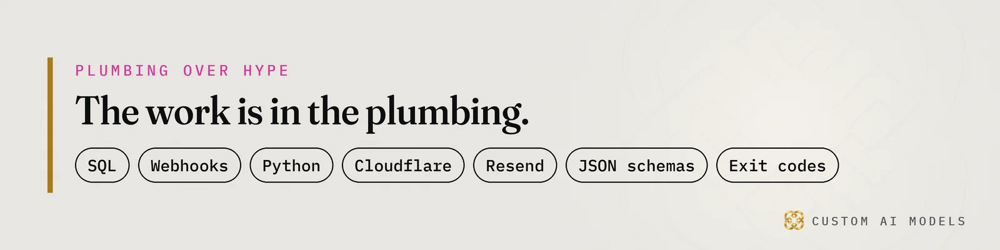
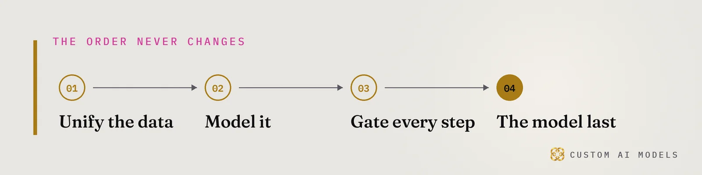

Custom AI Models
Custom AI Models Yeriko Vargas · Founder, Custom AI Models · Oct 2026
Yeriko Vargas · Founder, Custom AI Models · Oct 2026Short answer. AI search for HVAC contractors means one direct answer replaces the list of links. ChatGPT, Google AI Overviews and Bing Copilot name a few businesses when a homeowner asks for the best HVAC company near them. Contractors with matching, structured profiles, website content and citation data get named. The rest vanish from the answer and from the lead report.
Who is the best HVAC company near me? The engine answers for itself now
A homeowner who asks ChatGPT, Google's AI Overviews or Bing Copilot who the best HVAC company near them is now gets one direct answer. There is no page of links to scroll. The engine names a few businesses and moves on. If yours is missing from that answer, the homeowner never sees you, and your reports never show the lead you lost.
Lightning Leads Pro has built a service around this shift. Its framework tunes contractor profiles, website content and citation data for AI-generated responses. It pairs Local SEO fundamentals with Answer Engine Optimization, shaped to how AI systems judge local businesses.
We read that as proof of an order we already work in at Custom AI Models. Fix the data first. Then chase the answer.
Your traffic report says flat. The change happened upstream, before any click.

Why does a contractor vanish from AI answers?
A contractor vanishes when the engine cannot verify them. The profile says one thing, the website says another, and the directory listings say a third. An engine reads conflicting facts as risk and quotes a business with clean, matching records instead. The model did not pick a rival over you. Your data gave it no reason to pick you.
Where the records drift
- The business name is spelled three ways across listings.
- Service areas on the website differ from the profile.
- An old tracking phone number still sits on a directory.
- Services live in a PDF or an image instead of text.
- Hours were edited in one place only.
That pattern is data drift, the same failure that breaks retrieval systems. We wrote about it in why your AI did not fail, your data did. A search engine is a retrieval system with a public front door.
What does an AI-ready contractor profile contain?
An AI-ready profile is one source of truth that every surface copies from. It holds the legal name, service categories, service areas, hours, license details and a short plain description of each job type. Pages and listings are generated from it, never typed by hand. When one field changes, every citation changes with it.
Build the record once. Then publish it everywhere.
- One record per business, kept in a database, not in a pile of documents.
- One plain-text page per service, in the words a homeowner types.
- One
LocalBusinessJSON-LD block that repeats only what the page shows. - One export that feeds every directory and citation.
Write each service page as an answer. Lead with the sentence a homeowner would ask, then give the response in two lines. An engine can lift that passage whole. Detail follows for the human who keeps reading.

Local SEO and answer engine optimization run on one pipeline
Local SEO fundamentals decide whether you are a candidate. Answer engine optimization decides whether you are quotable. Both read the same records, so both belong to one pipeline: a clean source record, generated pages and listings, and a check that compares them. Separate tools for each job just create two places for drift to start.
Our earlier pieces cover each half. Your HVAC SEO froze, and AI Overviews took the click shows what the shift costs. Engines cite pages they can lift gives the checklist for making a page liftable.
This article sits between them. It is about the data underneath both, and for commercial work that means commercial HVAC data systems where inventory, accounts and the website describe the same business.
How do you prove an AI engine names your business?
You prove it by asking the engines, on a schedule, and logging every answer. Write the questions a homeowner would type. Run them against ChatGPT, Google AI Overviews and Bing Copilot. Record which businesses were named and which sources were cited. Compare week to week. A feeling that you rank is not evidence. A log is.
This is telemetry applied to search. Treat each run as a claim and let a script check it.
- Store the question, engine, date and full answer text.
- Flag any answer that names you with a wrong phone number or area.
- Fail the run with a non-zero exit code when a source record and a live listing disagree.
- Alert a person, not a dashboard nobody opens.
That is a deterministic validation gate, the same idea behind our Python pipelines. No model decides whether your record matches. A few lines of code do.
We make no promise that an engine will name you. Nobody outside the labs holds the ranking formula. You control what the engine finds when it arrives, and you can measure it.
Questions people ask
Does a contractor still need local SEO if AI search answers the question?
Yes. Local SEO fundamentals still decide whether an engine treats you as a candidate at all. Answer engine optimization adds the layer that makes your pages quotable. Skipping the basics leaves the engine with nothing consistent to cite, so the two jobs work together.
What data does an HVAC contractor need before optimizing for AI answers?
Start with one verified record: legal name, categories, service areas, hours, licenses and a plain description of each job. Every page and directory listing should be generated from it. Without that record you are optimizing copies that already disagree with each other.
Can I hire someone to guarantee I show up in ChatGPT or AI Overviews?
No honest vendor can guarantee placement, because the ranking formula is not public. What you can buy is clean structure, matching citations and a log that shows whether engines name you. Be wary of anyone who sells the outcome instead of the plumbing.
Who should own this inside a contractor business?
One person should own the source record, usually whoever runs operations or the website. Marketing can request changes, but the record changes in one place. Ownership matters because drift starts when several people edit listings by hand without a shared source.